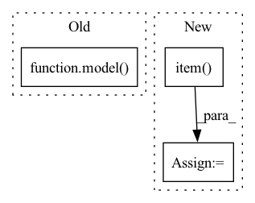

Pattern ID :39423

Before Change
model.train()
for epoch in tqdm(range(self.epochs)):
optimizer.zero_grad()
prediction = model(dataset["node_features"],
dataset["edges"],
dataset["edge_features"])
loss = F.nll_loss(prediction[dataset["train_index"]], dataset["target"][dataset["train_index"]])
loss.backward()
optimizer.step()
After Change
optimizer.step()
model.eval()
_, prediction = model(node_features, edges, edge_features).max(dim=1)
correct = int(prediction[test_index].eq(target[test_index]).sum().item())
acc = correct / int(test_index.shape[0])
print("\nAccuracy: {:.4f}".format(acc))
In pattern: SUPERPATTERN
Frequency: 3
Non-data size: 3
Instances
Fragment ID: 111898462
Project Name: benedekrozemberczki/pdn
Commit Name: a5762c1c18adc74f9e85dbc3ce2c6c3376628711
Time: 2021-02-08
Author: benedek.rozemberczki@gmail.com
File Name: src/pdn.py
M Class Name: Trainer
N Class Name: Trainer
M Method Name: train_model(3)
N Method Name: train_model(3)
M Parent Class: object
N Parent Class: object
M File Name: src/pdn.py
N File Name: src/pdn.py
M Start Line: 36
M End Line: 46
N Start Line: 34
N End Line: 57
'>
Before Change
images = (images.float() / 255.0).unsqueeze(dim=1).to(device)
// Categogrical encoding
labels = torch.eye(10).index_select(dim=0, index=labels).to(device)
loss = criterion(images, labels, *model(images))
total_loss += loss
loss.backward()
optimizer.step()
After Change
logits, reconstruction = model(images, labels)
// Compute loss & accuracy
loss = criterion(images, labels, logits, reconstruction)
accuracy = torch.sum(
torch.argmax(logits, dim=1) == torch.argmax(labels, dim=1)).item() / len(images)
total_loss += loss
loss.backward()
optimizer.step()
'>
Fragment ID: 111898460
Project Name: riroaki/capsnet
Commit Name: 93663bc0187864478e3173675639202ad534b132
Time: 2020-03-08
Author: aki@akideMacBook-Pro.local
File Name: main.py
M Class Name: AnonimousClass
N Class Name: AnonimousClass
M Method Name: main(0)
N Method Name: main(0)
M Parent Class:
N Parent Class:
M File Name: main.py
N File Name: main.py
M Start Line: 42
M End Line: 72
N Start Line: 39
N End Line: 73
'>
Before Change
with torch.no_grad():
if args.mlm:
outputs = model(inputs, masked_lm_labels=labels, position_ids=position_ids, token_type_ids=segment_ids)
else:
if args.model_type == "bart":
decoder_input_ids = labels[:, :-1].contiguous()
decoder_input_ids[decoder_input_ids == args.mlm_ignore_index] = tokenizer.pad_token_id
After Change
// Same behavior as modeling_bart.py, besides ignoring pad_token_id
ce_loss_fct = torch.nn.CrossEntropyLoss(ignore_index=args.mlm_ignore_index)
loss = ce_loss_fct(lm_logits.view(-1, lm_logits.shape[-1]), labels.view(-1))
eval_loss += loss.mean().item()
nb_eval_steps += 1
eval_loss = eval_loss / nb_eval_steps
'>
Fragment ID: 111898464
Project Name: stanford-oval/genienlp
Commit Name: b84a6548a69fd9f62652eed1c74fd4b1fdb8b65b
Time: 2020-11-15
Author: mehrad@stanford.edu
File Name: genienlp/paraphrase/run_lm_finetuning.py
M Class Name: AnonimousClass
N Class Name: AnonimousClass
M Method Name: evaluate(5)
N Method Name: evaluate(5)
M Parent Class:
N Parent Class:
M File Name: genienlp/paraphrase/run_lm_finetuning.py
N File Name: genienlp/paraphrase/run_lm_finetuning.py
M Start Line: 318
M End Line: 344
N Start Line: 330
N End Line: 369